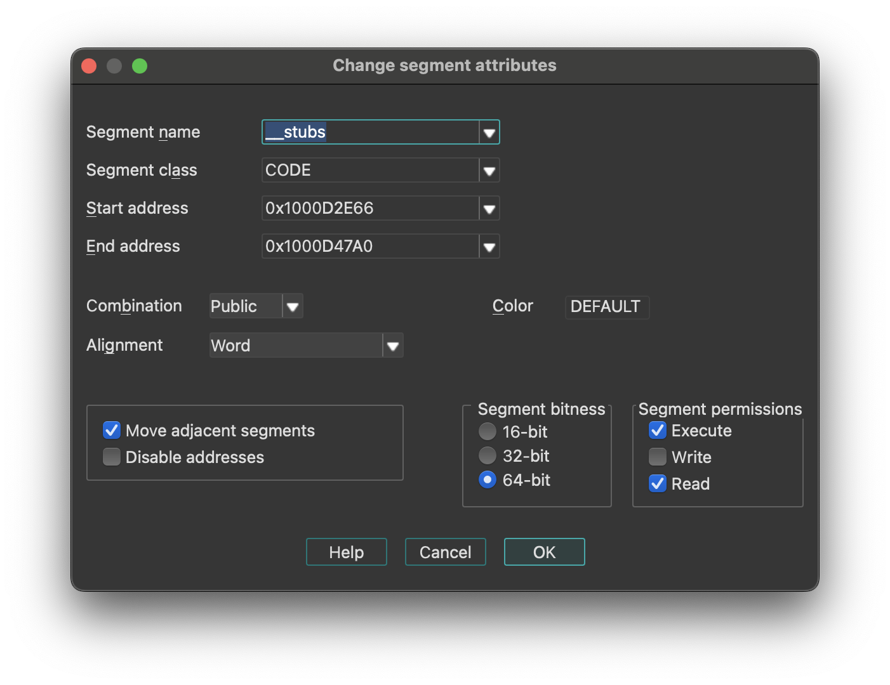
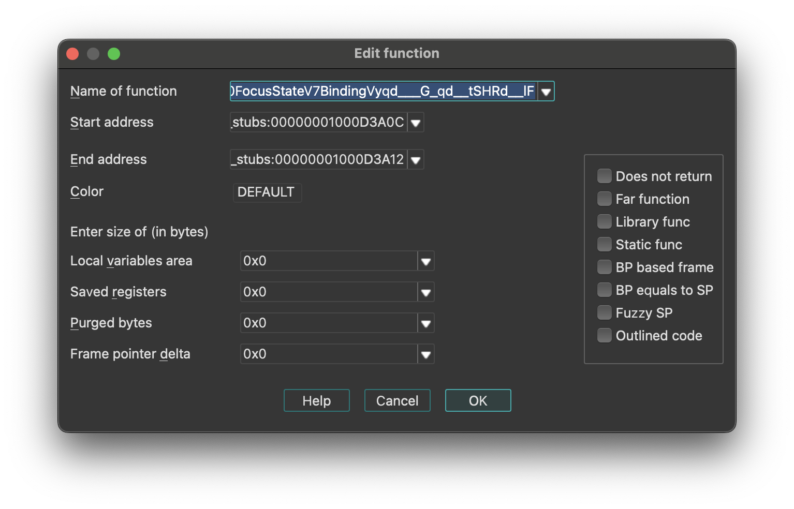

Edit menu actions for IDA View
{% hint style=“info” %} The options below appear when the Edit menu is opened from the IDA View. In other views, the menu adapts dynamically and may show a different set of options. {% endhint %}
Below is an overview of all actions that can be accessed from this menu.
| UI Action Name | Action Name | Description |
|---|---|---|
| Copy | EditCopy | Copy |
| Begin selection | Anchor | Begin selection. Some IDA commands such as selecting a portion of file to output or specifying a segment to move need an anchor. More… |
| Select all | SelectAll | Select all |
| Select identifier | SelectIdentifier | Select identifier |
| Undo | UndoAction | This command reverts the database to the state before executing the last user action. More… |
| Redo | RedoAction | This command reverts the previously issued Undo command. More… |
| Export data | ExportData | Export data |
| Code | MakeCode | Convert to instruction. More… |
| Data | MakeData | Convert to data. More… |
| Struct var… | DeclareStructVar | Declare a structure variable. More… |
| Strings | `` | |
| String | MakeStrlit | Convert to string. More… |
| C-style (0 terminated) | StringC | C-style (0 terminated) |
| DOS style ($ terminated) | StringDOS | DOS style ($ terminated) |
| Pascal style (1 byte length) | StringPascal1 | Pascal style (1 byte length) |
| Wide pascal (2 byte length) | StringPascal2 | Wide pascal (2 byte length) |
| Delphi (4 byte length) | StringDelphi | Delphi (4 byte length) |
| Unicode | StringUnicode | Unicode |
| Unicode pascal (2 byte length) | StringUnicodePascal2 | Unicode pascal (2 byte length) |
| Unicode wide pascal (4 byte length) | StringUnicodePascal4 | Unicode wide pascal (4 byte length) |
| Array… | MakeArray | Convert to array. More… |
| Undefine | MakeUnknown | Convert to undefined. More… |
| Rename | MakeName | Rename the current location. More… |
| Operand type | `` | |
| Offset | `` | |
| Offset (data segment) | OpOffset | Convert the current operand to an offset in the data segment. More… |
| Offset (current segment) | OpOffsetCs | Convert the current operand to an offset in the current segment. More… |
| Offset by (any segment)… | OpAnyOffset | Convert the current operand to an offset in any segment. More… |
| Offset (user-defined)… | OpUserOffset | Convert the current operand to an offset with any base. More… |
| Offset (struct)… | OpStructOffset | Convert the current operand to a structure offset. More… |
| Number | `` | |
| Number (default) | OpNumber | Convert the current operand to a number. More… |
| Hexadecimal | OpHex | Convert the current operand to a hexadecimal number. More… |
| Decimal | OpDecimal | Convert the current operand to a decimal number. More… |
| Octal | OpOctal | Convert the current operand to a octal number. More… |
| Binary | OpBinary | Convert the current operand to a binary number. More… |
| Floating point | OpFloat | Convert to floating point. More… |
| Toggle leading zeroes | ToggleLeadingZeroes | Toggle leading zeroes. More… |
| Character | OpChar | Convert the current operand to a character constant |
| Segment | OpSegment | Convert the current operand to a segment base |
| Enum member… | OpEnum | Convert the current operand to a symbolic constant |
| Stack variable | OpStackVariable | Convert the current operand to a stack variable |
| Change sign | ChangeSign | Change the sign of the current operand |
| Bitwise negate | BitwiseNegate | Perform bitwise negation of the current operand |
| Manual… | ManualOperand | Enter the current operand manually. More… |
| Set operand type… | SetOpType | Set the current operand’s type |
| Comments | `` | |
| Copy pseudocode to disassembly | hx:EditCmt | Edit func comment |
| Add pseudocode comments… | hx:AddPseudoCmt | Add pseudocode comments |
| Delete pseudocode comments… | hx:DelPseudoCmt | Delete pseudocode comments |
| Enter comment… | MakeComment | Enter a regular comment. More… |
| Enter repeatable comment… | MakeRptCmt | Enter repeatable comment. More… |
| Enter anterior lines… | MakeExtraLineA | Enter lines preceding the generated lines. More… |
| Enter posterior lines… | MakeExtraLineB | Enter lines following the generated lines |
| Edit block comment… | mv:EditBlockCmt | Edit block comment of microcode line |
| Edit comment… | mv:EditCmt | Edit comment of microcode line |
| Segments | `` | |
| Create segment… | CreateSegment | This command allows you to create a new segment. More… |
| Edit segment… | EditSegment | Edit segment attributes. More… |
| Delete segment… | KillSegment | Delete segment. More… |
| Move current segment… | MoveSegment | Change the current segment boundaries. More… |
| Rebase program… | RebaseProgram | Rebase program. More… |
| Change segment translation… | SegmentTranslation | Change the current segment translation table |
| Change segment register value… | SetSegmentRegister | Change segment register value. More… |
| Set default segment register value… | SetSegmentRegisterDefault | Set default segment register value. More… |
| Structs | `` | |
| Struct var… | DeclareStructVar | Declare a structure variable. More… |
| Force zero offset field | ZeroStructOffset | Toggle display of the first field of a structure in an offset expression. More… |
| Select union member… | SelectUnionMember | Choose the representation of a union member. More… |
| Create struct from selection | CreateStructFromData | This command defines a new structure from data already defined. The new structure is created with adequate data types, and each member uses the current data name if it is available. More… |
| Copy field info to pointers | CopyFieldsToPointers | Copy field info to pointed addresses. This command scans the current struct variable and renames the locations pointed by offset expressions unless they already have a non-dummy name. More… |
| Functions | `` | |
| Create function… | MakeFunction | Create a new function in the disassembly. More… |
| Edit function… | EditFunction | Edit function attributes - change function properties, including bounds, name, flags, and stack frame parameters. More… |
| Append function tail… | AppendFunctionTail | This command appends an arbitrary range of the program to a function definition. A range must be selected before applying this command. This range must not intersect with other function chunks (however, an existing tail can be added to multiple functions). More… |
| Remove function tail… | RemoveFunctionTail | Remove function tail. More… |
| Delete function | DelFunction | Delete function. Deleting a function deletes only information about a function, such as information about stack variables, comments, function type, etc. The instructions composing the function will remain intact. |
| Set function end | FunctionEnd | Change the function end address. This command changes the current or previous function bounds so that its end will be set at the cursor. If it is not possible, IDA beeps. |
| Stack variables… | OpenStackVariables | Open the stack variables window. See subviews for more. |
| Change stack pointer… | ChangeStackPointer | Change stack pointer. This command allows you to specify how the stack pointer (SP) is modified by the current instruction. More… |
| Rename register… | RenameRegister | Rename a general processor register. More… |
| Set type… | SetType | Set type information for an item or current function. More… |
| Patch program | `` | |
| Change byte… | PatchByte | Change program bytes. More… |
| Change word… | PatchWord | Change program words |
| Assemble… | Assemble | This command allows you to assemble instructions. Currently, only the IBM PC processors provide an assembler, nonetheless, plugin writers can extend or totally replace the built-in assembler by writing their own. More… |
| Patched bytes | PatchedBytes | Open the Patched bytes window. More… |
| Apply patches to input file… | ApplyPatches | Apply previously patched bytes back to the input file. If the “Restore” option is selected, then the original bytes will be applied to the input file. More… |
| Other | `` | |
| Specify switch idiom… | uiswitch:SpecSwitchIdiom | Specify switch idiom |
| Create alignment directive… | MakeAlignment | Create alignment directive. More… |
| Manual instruction… | ManualInstruction | Specify alternate representation of the current instruction. More… |
| Color instruction… | ColorInstruction | This command allows you to specify the background color for the current instruction or data item. More… |
| Reset decompiler information… | hx:ResTypeInfo | Reset decompiler information |
| Toggle skippable instructions… | hx:ToggleSkippableInsn | Toggle skippable instructions |
| Decompile as call… | hx:UserDefinedCall | Decompile as call |
| Toggle border | ToggleBorder | Toggle the display of a border between code and data. More… |
| detect and parse golang metadata | golang:detect_and_parse | detect and parse golang metadata |
| Open picture in default viewer | picture_search:open_in_viewer | Open picture in default viewer |
| Save picture | picture_search:save_picture | Save picture |
| Plugins | `` | |
| Quick run plugins | QuickRunPlugins | Quickly run a plugin |
Begin selection
Begin selection. Some IDA commands such as selecting a portion of file to output or specifying a segment to move need an anchor.
To drop the anchor, you can either use the Alt + L key or the Shift + ↑, ←, →, ↓ combination, which is more convenient. You can also drop the anchor with the mouse by simply clicking and dragging it.
After you’ve dropped the anchor, you can navigate freely using arrows, etc. Any command that uses the anchor, raises it.
The anchored range is displayed with another color.
When you exit from IDA, the anchor value is lost.
Undo
This command reverts the database to the state before executing the last user action. It is possible to apply Undo multiple times, in this case multiple user actions will be reverted.
Please note the entire database is reverted, including all modifications that were made to the database after executing the user action and including the ones that are not connected to the user action. For example, if a third party plugin modified the database during or after the user action, this modification will be reverted. In theory it is possible to go back in time to the very beginning and revert the database to the state that was present immediately after performing the very first user action. However, in practice the undo buffers overflow because of the changes made by autoanalysis.
Autoanalysis (Options → General… → Analysis) generates copious amounts of undo data. Also, please note that maintaining undo data during autoanalysis slows it down a bit. In practice, it is not a big deal because the limit on the undo data is reached quite quickly (in a matter of minutes). Therefore, if during analysis the user does not perform any actions that modify the database, the undo feature will turn itself off temporarily.
However, if you prefer not to collect undo data at all during the initial autoanalysis, just turn off the UNDO_DURING_AA parameter in ida.cfg.
The configuration file ida.cfg has 2 more undo-related parameters:
| Parameter | Description | Default |
|---|---|---|
| UNDO_MAXSIZE | Max size of undo buffers. Once this limit is reached, the undo info about the oldest user action will be forgotten. | 128MB |
| UNDO_DEPTH | Max number of user actions to remember. If set to 0, the undo feature will be unavailable. | 1000000 |
Since there is a limit on the size of undo buffers, any action, even the tiniest, may become non-undoable after some time. This is true because the analysis or plugins may continue to modify the database and overflow the buffers. Some massive actions, like deleting a segment, may be non-undoable just because of the sheer amount of undo data they generate.
Please note that Undo does not affect the state of IDC or Python scripts. Script variables will not change their values because of Undo. Also nothing external to the database can be changed: created files will not be deleted, etc.
Some actions cannot be undone. For example, launching a debugger or resuming from a breakpoint cannot be undone.
Redo
This command reverts the previously issued Undo command. It is possible to use Redo multiple times.
This command also reverts all changes that were done to the database after the last Undo command, including the eventual useful modifications made by the autoanalysis. In other words, the entire database is modified to get to the exact state that it had before executing the last Undo command.
Code
Convert to instruction. This command converts the current unexplored bytes to instruction(s). IDA will warn you if it is not possible.
If you have selected a range using the Anchor action, all the bytes from this range will be converted to instructions.
If you apply this command to an instruction, it will be reanalyzed.
Data
Convert to data. This command converts the current unexplored bytes to data. If it is not possible, IDA will warn you.
Multiple using of this command will change the data type:
db -> dw -> dd -> float -> dq -> double -> dt -> packreal -> octa \;
^ |;
\---------<----------------<--------------<-----------------------/;
You may remove some items from this list using the Setup data types… command (action SetupData).
If the target assembler (Options → General… → Analysis) does not support double words or another data type, it will be skipped. To create a structure variable, use the Struct var… command (action DeclareStructVar). To create an array, use the Array… command (action MakeArray). To convert back, use the Undefine command (action MakeUnknown).
Struct var…
Declare a structure variable. IDA will ask you to choose a structure type. You must have some structure types defined in order to use this command. If the target assembler supports it, IDA will display the structure in terse form (using just one line). To uncollapse a terse structure variable use the Unhide command. You can also use this command to declare a structure field in another structure (i.e., nested structures are supported too).
String
Convert to string.
This command converts the current unexplored bytes to a string.
The set of allowed characters is specified in the configuration file, parameter StrlitChars. Character ‘\0’ is not allowed in any case. If the current assembler (Options → General → Analysis → Target assembler) does not allow characters above 0x7F, characters with high bit set are not allowed.
If the anchor has been dropped, IDA will take for the string all characters between the current cursor position and the anchor.
Use the anchor if the string starts a disallowed character.
This command also generates a name for the string. In the configuration file, you can specify the characters allowed in names (NameChars).
You can change the literal string length using Array… command (action MakeArray).
The GUI version allows you to assign a special hotkey to create Unicode strings. To do so, change the value of the StringUnicode parameter in the IDAGUI.CFG file.
Array…
Convert to array. This command allows you to create arrays and change their sizes.
The arrays are created in 2 simple steps:
-
Create the first element of array using the data definition commands (data, string, structs)
-
Apply the array command to the created data item. Enter array size in current array elements (not bytes). The suggested array size is the minimum of the following values:
- the address of the next item with a cross reference
- the address of the next user-defined name For string literals, you can use this command to change the length of the string.
The dialog box contains the following fields:
-
Items on a line (meaningless for string literals):
- 0 - place maximal number of items on a line
- other value - number of items on a line Please note that the margin parameter affects the number of items on a line too.
-
Alignment (meaningless for string literals):
- -1 - do not align items
- 0 - align automatically
- other value - width of each item
-
Signed elements: if checked, IDA treats all elements as signed numbers. Only meaningful for numbers (not for offsets and segments and strings)
-
Display indexes: if checked, IDA will display the indexes of array elements in the form of comments (0,1,2…)
-
Create as array: if not checked, IDA will create a separate item for each array element. Useful for creating huge arrays. If the box is unchecked when this command is applied to string literals, IDA will create many string literals instead of one big string.
If applied to a variable-sized structure, this command is used to specify the overall size of the structure. You cannot create arrays of variable-sized structures.
Undefine
Convert to undefined. This command deletes the current instruction or data, converting it to ‘unexplored’ bytes. IDA will delete the subsequent instructions if there are no more references to them (functions are never deleted).
If you have selected a range using the Anchor action, all the bytes in this range will be converted into ‘unexplored’ bytes. In this case, IDA will not delete any other instructions even if there are no references to them after the deletion.
Rename
Rename the current location. This command gives name/renames/deletes name for the current item.
To delete a name, simply give an empty name.
If the current item is referenced, you cannot delete its name. Even if you try, IDA will generate a dummy name (See Options → Name representation…).
List of available options:
-
Local name: The name is considered to be defined only in the current function. Please note that IDA does not check the uniqueness of the local names in the whole program. However, it does verify that the name is unique for the function.
-
Include in name list: Here you can also include/remove the name from the name list (see the Jump by name… command; action
JumpName). If the name is hidden, you will not see it in the names window. -
Public name: You can declare a name as a public (global) name. If the current assembler supports the “public” directive, IDA will use it. Otherwise, the publicness of the name will be displayed as a comment.
-
Autogenerated name: An autogenerated name will appear in a different color. If the item is indefined, it will disappear automatically.
-
Weak name: You can declare a name as a weak name. If the current assembler supports the “weak” directive, IDA will use it. Otherwise, the weakness of the name will be displayed as a comment.
-
Create name anyway: If this flag is on, and if the specified name already exists, IDA will try to variate the specified name by appending a suffix to it.
Offset (data segment)
Convert the current operand to an offset in the data segment. This command converts the immediate operand of the current instruction/data to an offset from the current data segment (DS). If the current DS value is unknown (or equal 0xFFFF) IDA will warn you - it will beep. In this case, you have to define DS register value for the current byte. The best way to do it is:
- jump to segment register change point (the Jump to segment register… command; action
JumpSegmentRegister), - change value of DS (the Change segment register value… command; action
SetSegmentRegister) - return (the Jump back command; action
Return) or you can change default value of DS for the current segment (the Set default segment register value… command; actionSetSegmentRegisterDefault).
If you want to delete offset definition, you can use this command again - it works as trigger.
If the cursor is on the first operand (the cursor is before ‘,’) then the first operand will be affected; otherwise, all other operands will be affected.
If a range is selected using the anchor, IDA will perform ‘en masse’ conversion. It will convert immediate operands of all instructions in the selected range to offsets. However, IDA will ask you first the lower and upper limits of immediate operand value. If the operand value is >= lower limit and <= upper limit then the operand will be converted to offset, otherwise it will be left unmodified.
To create offsets to structure members use the Offset (struct)… command (action OpStructOffset).
Offset (current segment)
Convert the current operand to an offset in the current segment.
If the cursor is on the first operand (the cursor is before ‘,’) then the first operand will be affected; otherwise, all other operands will be affected.
If a range is selected using the anchor, IDA will perform ‘en masse’ conversion. It will convert immediate operands of all instructions in the selected range to offsets. However, IDA will ask you first the lower and upper limits of immediate operand value. If the operand value is >= lower limit and <= upper limit then the operand will be converted to offset, otherwise, it will be left unmodified.
If this command is applied to a structure member in the Local types window, then IDA will create an “automatic offset”. An automatic offset is an offset with the base equal to 0xFFFFFFFF. This base value means that the actual value of the base will be calculated by IDA when a structure instance is created.
To create offsets to structure members use the Offset (struct)… command (action OpStructOffset).
Offset by (any segment)…
Convert the current operand to an offset in any segment.
This command converts the immediate operand of the current instruction/data to an offset from any segment.
IDA will ask to choose a base segment for the offset.
If a range is selected using the anchor, IDA will perform ‘en masse’ conversion. It will convert immediate operands of all instructions in the selected range to offsets. However, IDA will ask you first the lower and upper limits of immediate operand value. If the operand value is >= lower limit and <= upper limit then the operand will be converted to offset, otherwise it will be left unmodified.
If the cursor is on the first operand (the cursor is before ‘,’) then the first operand will be affected; otherwise, all other operands will be affected.
To create offsets to structure members use Offset (struct)… command (action OpStructOffset).
Offset (user-defined)…
Convert the current operand to an offset with any base. If the cursor is on the first operand (the cursor is before ‘,’) then the first operand will be affected; otherwise, all other operands will be affected. If the offset base is specified as 0xFFFFFFFF, then IDA will create “an automatic offset”. Automatic offsets mean that the actual value of the base will be calculated by IDA.
The following offset attributes are available:
| Option | Description |
|---|---|
| Treat the base address as a plain number | if checked, IDA will treat the base address as a number. In this case, IDA will not create a cross-reference to it and the base address will be printed as a number, not as an offset expression. |
| Offset points past the main object | Offsets of this type point past an object end. They do not cause an object created/deletion. |
| Use image base as offset base | These offsets are based on the image base. There is no need to explicitly specify the offset base. These offsets are displayed in a concise form: rva func instead of offset func - imagebase. If you intend to reassemble the output file, execute the following IDC statement: set_inf_attr(INF_GENFLAGS, get_inf_attr(INF_GENFLAGS) & ~INFFL_ALLASM); |
| Subtract operand value | Use this option when the operand value should be substracted from the base to get the target address. In this case the displayed expression will be displayed as offset base - target instead of the usual offset target - base |
| Signed operand | Use this option if the operand should be interpreted as a signed value. This option is only available for OFF_REF8, OFF_REF16, OFF_REF32 and OFF_REF64 offset types. |
| Operand value of 0 is invalid | If the operand value is 0, the value will be highlighted in red. |
| Operand value of NOT 0 is invalid | If the operand value is zero’s complement (i.e. all bits are set), the value will be highlighted in red. For example a OFF_REF16 with an operand value of 0xFFFF would be invalid. |
| Use the current address as the offset base | The offset base is dynamically calculated and is equal to the address of the current element: - for standalone items: their start address - for arrays: the start of the array element - for structures: the start of the structure field |
The offset expression is displayed in the following concise form: offset target - $ where “$” denotes the start of the element (and is assembler-dependent).
To create offsets to structure members use the Offset (struct)… command (action OpStructOffset).
Offset (struct)…
Convert the current operand to a structure offset. This command permits to convert all immediate operands of instructions in a range selection to a path of offsets through a structure and its possible sub unions. If no selection is active, IDA will simply permit to convert the current operand. In this case, it will display a simple dialog box the same way as the text version (see below). You can select the desired register in the drop-down list: all operands relative to this register will be added to the ‘Offsets’ list. A special empty line in the drop-down list is used to directly work on immediate values. Checkboxes in the ‘Offsets’ list allow you to select which operand you indeed want to modify. By default, IDA will select only undefined operands, to avoid overwriting previous type definitions. This list is sorted by operand value, by instruction address and finally by operand number. You can easily see the instructions related to the operand by moving the mouse over it, and wait for a hint to be displayed. The ‘Structures and Unions’ tree will contain all selectable structures, and sub unions. Once you select or move over a structure, the ‘Offsets’ list updates itself for each checked offset: the computed name of the operand is displayed, according to the selected structure in the tree. An icon is also drawn, to easily know if a specific structure matches the offset or not, or if the offset is too big for the selected structure. The structures who match the most offsets will be near the top of the tree. You can also move your mouse over structures in the tree to obtain an interesting hint. A ‘?’ icon can also appear, if the offset can be specialized by selecting an union member. In this case, if you expand the structure in the tree, you can select the adequate union member simply by checking the desired radio button. IDA automatically corrects the related name in the ‘Offsets’ list. The ‘Offset delta’ value represents the difference between the structure start and the pointer value. For example, if you have an operand 4 and want to convert in into an expression like “mystruct.field_6-2”, then you have to enter 2 as the delta. Usually the delta is zero, i.e. the pointer points to the start of the structure. The ‘Hide sub structures without sub unions’ option (checked by default) avoids to add unnecessary sub structures to the tree, to keep it as small as possible. If you uncheck this option, all sub structures will be added to the tree. By default, IDA displays the structure member at offset 0. To change this behavior, you can directly disable the ‘Force zero offset field’ in the ‘Options’ frame. Later zero offsets can be forced using Edit → Structs → Force zero offset menu item.
Text version
This command converts immediate operand(s) type of the current instruction/data to an offset within the specified structure. Before using this command, you have to define a structure type. First of all, IDA will ask a so-called “struct offset delta”. This value represents the difference between the structure start and the pointer value. For example, if you have an operand 4 and want to convert in into an expression like “mystruct.field_6-2”, then you have to enter 2 as the delta. Usually the delta is zero, i.e. the pointer points to the start of the structure. If a range is selected using the anchor, IDA will perform ‘en masse’ conversion. It will convert immediate operands of all instructions in the selected range to offsets. However, IDA will ask you first the lower and upper limits of immediate operand value. If the an operand value is >= lower limit and <= upper limit then the operand will be converted to offset, otherwise it will be left unmodified. When you use this command, IDA deletes the manually entered operand. If the cursor is on the first operand (the cursor is before ‘,’) then the first operand will be affected; otherwise, all other operands will be affected. By default IDA doesn’t display the structure member at offset 0. To change this behavior, use the Force zero offset field command. Moreover, if there are several possible representations (this can happen if unions are used), select the desired representation using the Select union member… command.
Number (default)
Convert the current operand to a number.
That way, you can delete suspicious mark of the item.
The number is represented in the default radix for the current processor (usually hex, but octal for PDP-11, for example).
When you use this command, IDA deletes the manually entered operand (via the Manual… command; action ManualOperand).
If the cursor is on the first operand (the cursor is before ‘,’) then the first operand will be affected; otherwise, all other operands will be affected.
Hexadecimal
Convert the current operand to a hexadecimal number.
This command converts the immediate operand(s) type of the current instruction/data to a hex number, so that you can delete the suspicious mark of the item.
When you use this command, IDA deletes the manually entered operand (via the Manual… command; action ManualOperand).
If the cursor is on the first operand (the cursor is before ‘,’) then the first operand will be affected; otherwise, all other operands will be affected.
Decimal
Convert the current operand to a decimal number.
This command converts the immediate operand(s) type of the current instruction/data to decimal. Therefore, it becomes a ‘number’.
When you use this command, IDA deletes the manually entered operand (via the Manual… command; action ManualOperand).
If the cursor is on the first operand (the cursor is before ‘,’) then the first operand will be affected; otherwise, all other operands will be affected.
Octal
Convert the current operand to a octal number.
IDA always uses 123o notation for octal numbers even if the current assembler does not support octal numbers.
When you use this command, IDA deletes the manually entered operand (via the Manual… command; action ManualOperand).
If the cursor is on the first operand (the cursor is before ‘,’) then the first operand will be affected; otherwise, all other operands will be affected.
Binary
Convert the current operand to a binary number.
This command makes the current instruction or data operand type binary. IDA always uses 123b notation for binary numbers even if the current assembler does not support binary numbers.
When you use this command, IDA deletes the manually entered operand (via the Manual… command; action ManualOperand).
If the cursor is on the first operand (the cursor is before ‘,’) then the first operand will be affected; otherwise, all other operands will be affected.
Floating point
Convert to floating point.
When you use this command, IDA deletes the manually entered operand (via the Manual… command; action ManualOperand).
If the cursor is on the first operand (the cursor is before ‘,’) then the first operand will be affected; otherwise, all other operands will be affected.
Toggle leading zeroes
Toggle leading zeroes.
This command displays or hides the leading zeroes of the current operand. Example: if the instruction looked like this:
and ecx, 40h
then after applying the command it will look like this:
and ecx, 00000040h
If you prefer to see leading zeroes in all cases, then open the calculator and enter the following expression: set_inf_attr (INF_GENFLAGS, get_inf_attr(INF_GENFLAGS) | INFFL_LZERO); This will toggle the default for the current database and all numbers without leading zeroes will become numbers with leading zeroes, and vice versa. See also Edit|Operand types submenu.
Manual…
Enter the current operand manually. You may specify any string instead of an operand if IDA does not represent the operand in the desired form. In this case, IDA will simply display the specified string in the instruction instead of the default operand.
The current operand (under the cursor) will be affected.
You can use this command not only with instructions but with data items too.
IDA proposes the previous manual operand as the default value in the input form.
To delete the manual operand and revert back to the default text, specify an empty string.
IDA automatically deletes manually entered operands when you change operand representation using Edit → Operand types submenu.
{% hint style=“info” %} A text offset reference is generated if you use a label in the program as the operand string. In other cases no cross-references are generated. {% endhint %}
Enter comment…
Enter a regular comment. If you stand at the function start and your cursor is on a function name, IDA will ask you to enter a function comment. If you stand at the segment start and your cursor is on a segment name, IDA will ask you to enter a segment comment. If this command is issued in the Local types window, it allows you to change the comment of a structure/enum, or structure/enum member. If the cursor is on the structure/enum name, the structure/enum comment will be changed, otherwise the member comment will be changed. Otherwise, this command allows you to enter a normal indented comment for the current item. You can show/hide all comments in Options → General → Disassembly → Display disassembly line parts: Comments.
Enter repeatable comment…
Enter repeatable comment. A repeatable comment will appear attached to the current item and all other items referencing it. If you stand at the function start, IDA will ask you to enter a function comment. If this command is issued in the Local types window, it allows you to change the comment of a structure/enum, or structure/enum member. If the cursor is on the structure/enum name, the structure/enum comment will be changed, otherwise the member comment will be changed. Otherwise, this command allows you to enter a repeatable comment for the current item.
{% hint style=“info” %} You cannot enter repeatable segment comments. {% endhint %}
All items that refer to the current item will have this comment by default. Note that if you have defined both comment types (regular and repeatable), the regular comment will be displayed for the current item and the repeatable comment will be displayed for all items that refer to the current item, if they do not have their own comments. The repeatable comments may be used to describe subroutines, data items, etc., because all calls to the subroutine will have the repeatable comment. You can show/hide all comments in Options → General → Disassembly → Display disassembly line parts: Comments.
Enter anterior lines…
Enter lines preceding the generated lines. If you want to enter multi-line comments or additional instructions, you can use this feature of IDA.
There are two kinds of extra lines: the ones generated before the instruction line and the ones generated after the instruction line.
Do not forget that the maximal number of lines for an item is 500.
IDA does not insert a comment symbol at the beginning of the lines.
Create segment…
This command allows you to create a new segment.
If you select a range using the anchor, IDA will propose the start address and the end address of the selection as defaults for the segment bounds.
You need to specify at least:
- the segment start address
- the segment end address (excluded from the range)
- the segment base
Click here to learn about addressing model used in IDA.
If “sparse storage” is set, IDA will use special sparse storage method for the segment. This method is recommended for huge segments. Later, it is possible to change the storage method of any region using set_storage_type IDC function.
If another segment already exists at the specified address, the existing segment is truncated and the new segment lasts from the specified start address to the next segment (or specified end address, whichever is lower). If the old and the new segments have the same base address, instructions/data will not be discarded by IDA. Otherwise, IDA will discard all instructions/data of the new segment.
An additional segment may be created by IDA to cover the range after the end of the new segment.
Edit segment…
Edit segment attributes. This command opens the Change segment attributes dialog.

Change segment attributes options
- How to change segment name
- How to change segment class
- How to change segment addressing mode (16/32)
- How to change segment alignment
- How to change segment combination
{% hint style=“info” %} Changing the segment class may change the segment type. {% endhint %}
-
Move Adjacent Segments: means that the previous and next segments will be shrunk or expanded to fill gaps between segments. Click here for more information.
-
Disable Addresses: if set, when a segment is shrunk, all information about bytes going out of the segment will be completely removed.. Otherwise, IDA will discard information about instructions/data, comments etc, but will retain byte values so that another segment can be created later and it will use the existing byte values.
If IDA creates 2 segments where only one segment must exist, you may try the following sequence:
- Delete one segment (action
KillSegment). Choose one with bad segment base value. Do not disable addresses occupied by the segment being deleted. - Change bounds of another segment. Note that the Create segment… command (action
CreateSegment) changes the boundaries of the overlapping segment automatically.
Segments with the “debugger” attribute are the segments whose memory contents are not saved in the database. Usually, these segments are created by the debugger to reflect the current memory state of the program.
However, the user can modify this attribute.
If it is cleared, then the segment will permanently stay in the database after closing the debugger session. The database will reflect the state of the segment which was at the time when the status is changed.
If it is set, then the segment will become a temporary segment and will be deleted at the end of the debugging session.
The debugger segment checbkox is available only during debugging sessions.
The “loader” segments are the segment created by the file loader. The segment having this attribute are considered to be part of the input file.
A segment with the “debugger” attribute set and the “loader” attribute not set is considered to be an ephemeral segment. Such segments are not analyzed automatically by IDA.
“Segment permissions” group box can be used to modify Segment access permissions (Read/Write/Execute)
Segment Name
Enter a new name for the segment. A segment name is up to 8 characters long. IDA does check if the length is ok. Try to give mnemonic names for the segments.
Class Name
The segment class name identifies the segment with a class name (such as CODE, FAR_DATA, or STACK). The linker places segments with the same class name into a contiguous range of memory in the runtime memory map.
Changing the segment class changes only the segment definition on the screen. There are the following predefined segment class names:
| Segment class | Description |
|---|---|
| CODE | Pure code |
| DATA | Pure data |
| CONST | Pure data |
| BSS | Uninitialized data |
| STACK | Uninitialized data |
| XTRN | Extern definitions segment |
If you change segment class and the segment type is “Regular”, then the segment type will be changed accordingly.
In order to set the segment type “Regular”, you should change the segment class to “UNK”.
{% hint style=“info” %} Segment class names are never deleted. Once you define a segment class name, you cannot reuse it as a name of another object. {% endhint %}
Segment bitness
You can choose between 16-bit and 32-bit segment addressing.
IDA will delete all instructions and data in the segment if the segment address is changed.
Never do it if you are not sure. It may have irreversible consequences, all instructions/data will be converted to undefined bytes.
Segment Alignment
You can specify the segment alignment for the selected segment. By default, IDA assumes ‘byte’ alignment.
Changing the alignment changes only the segment definition on the screen. Nothing else will happen.
Segment Combination
A field that describes how the linker can combine the segment with other segments. Under MS-DOS, segments with the same name and class can be combined in two ways: they can be concatenated to form one logical segment, or they can be overlapped. In the latter case, they have either the same start address or the same end address, and they describe a common range in memory. Values for the field are:
- Private: Do not combine with any other program segment.
- Public: Combine by appending at an offset that meets the alignment requirement.
- Stack: Combine as for Public. This combine type forces byte alignment.
- Common: Combine by overlay using maximum size.
Changing segment combination changes only the segment definition on the screen. Nothing else will happen.
Delete segment…
Delete segment. IDA will ask your the permission to disable the addresses occupied by the segment. If you allow this operation, all information about the segment will be deleted. In other words, IDA will discard the information about instructions or data, comments etc.
If you check the “disable addresses” checkbox, IDA will mark the addresses occupied by the segment as “nonexistent” in the program. You will lose ALL information, including byte values.
It is impossible to disassemble the content of addresses not located in any segment, therefore you must create a new segment if you want to resume the disassembly of that part of the code.
You can also edit an adjacent segment to expand it to those addresses (Edit → Segments → Edit segment…).
IDA will ask your the permission to disable addresses occupied by the segment. If you give your permission, information about the segment will be deleted, otherwise IDA will discard information about instruction/data, comments etc, but retain byte values so that you will be able to create another segment afterwards. To disassemble the addresses occupied by the segment, you need to create a new segment again (i.e. you cannot disassemble bytes without a segment). You can also expand another adjacent segment to these addresses.
Move current segment…
Change the current segment boundaries. This command open the Move segment dialog and allows you to move segment(s) to another address. Use it if the segment(s) are loaded at a wrong address. This command shifts (moves) the selected segments in the memory to the target address. There must be enough free space at the target address for the segments. All information in the segment will be moved to the new address, but since the addresses change, the disassembly might be not valid anymore (especially if the program is moved to the wrong addresses and the relocation information is not available).
Fix up the relocated segment
This option allows IDA to modify the references to/from the relocated segment(s). If it is turned off, the references might be wrong after the move.
Rebase program…
Rebase program. The whole program will be shifted by the specified amount of bytes in the memory. The following options are available (we strongly recommend to leave them turned on):
- Fix up relocations: This option allows IDA to modify the references to/from the relocated segment(s). If it is turned off, the references might be wrong after the move.
- Rebase the whole image: This option is accessible only if the whole program is selected. It allows IDA to adjust internal variables on the whole program.
Please note rebasing the program might remove user-defined xrefs.
Change segment register value…
Change segment register value.
Relevant only for processors with the segment registers. Currently this command works for IBM PC, TMS320C2, Intel80196, and PowerPC processors.
This command creates or updates a segment register change point.
See also the Jump to segment register… command (action JumpSegmentRegister) for more info.
Set default segment register value…
Set default segment register value. Relevant only for processors with the segment registers. You can specify a default value of a segment register for the current segment. When you change the default value, IDA will reanalyze the segment, taking the default value when it cannot determine the actual value of the register. This takes time, so do not be surprised if references are not corrected immediately.
To specify a value other than the default value of a segment register, you can use the Change segment register value… command (action SetSegmentRegister).
Struct var…
Declare a structure variable. IDA will ask you to choose a structure type. You must have some structure types defined in order to use this command. If the target assembler supports it, IDA will display the structure in terse form (using just one line). To uncollapse a terse structure variable use the Unhide command. You can also use this command to declare a structure field in another structure (i.e., nested structures are supported too).
Force zero offset field
Toggle display of the first field of a structure in an offset expression. This command forces IDA to display a full structure member name even if the offset of the member is equal to zero.
If used twice, the command cancels itself.
Example: Suppose we have the following structure:
xxx struc
a db ?
b db ?
c db ?
xxx ends
dloc xxx ?
Normally IDA displays references to it like this:
mov eax, offset dloc
mov eax, offset dloc.b
If you force IDA, then it displays member ‘a’:
mov eax, offset dloc.a
mov eax, offset dloc.b
Select union member…
Choose the representation of a union member. This command tells IDA how to display references to a union from the current cursor location.
Example: Suppose we have the following union:
xxx union
a db ?
b dw ?
c dd ?
ends xxx
dloc xxx ?
Normally, IDA displays references to “dloc” like this:
mov al, byte ptr dloc
mov eax, word ptr dloc
After using this command, IDA can display the union members:
mov al, dloc.b
mov eax, dloc.d
Create struct from selection
This command defines a new structure from data already defined. The new structure is created with adequate data types, and each member uses the current data name if it is available.
This command is available only in the graphical version of IDA.
Copy field info to pointers
Copy field info to pointed addresses. This command scans the current struct variable and renames the locations pointed by offset expressions unless they already have a non-dummy name.
It also copies the type info from the struct members to pointed locations.
Create function…
Create a new function in the disassembly. You can specify function boundaries using the anchor. If you don’t specify any, IDA will try to find the boundaries automatically:
- function start point is equal to the current cursor position;
- function end point is calculated by IDA.
A function cannot contain references to undefined instructions. If a function has already been defined at the specified addresses, IDA will jump to its start address, showing you a warning message. A function must start with an instruction.
Edit function…
Edit function attributes - change function properties, including bounds, name, flags, and stack frame parameters. This command opens an Edit Function dialog, and allows you to modify function characteristics and stack frame structure. If the current address does not belong to any function, IDA will beep.

To change only the function end address, use the FunctionEnd command instead.
This command allows you to change the function frame parameters too. You can change sizes of some parts of frame structure.
Stack Frame Structure
IDA represents the stack using the following structure:
| Stack Section | Pointer |
|---|---|
| function arguments | - |
| return address | - |
| saved registers (SI, DI, etc) | ← BP |
| local variables | ← SP |
{% hint style=“info” %} For some processors or functions, BP may equal SP, meaning it points to the bottom of the stack frame. {% endhint %}
You may specify the number of bytes in each part of the stack frame. The size of the return address is calculated by IDA (possibly depending on the far function flag).
push ebp
lea ebp, [esp-78h]
sub esp, 588h
push ebx
push esi
lea eax, [ebp+74h]
+------------------------------+
| function arguments |
+------------------------------+
| return address |
+------------------------------+
| saved registers (SI,DI,etc) |
+------------------------------+ <- typical BP
| |
| |
| | <- actual BP
| local variables |
| |
| |
| |
+------------------------------+ <- SP
In our example, the saved registers area is empty (since EBP has been initialized before saving EBX and ESI). The difference between the ‘typical BP’ and ‘actual BP’ is 0x78 and this is the value of FPD.
After specifying FPD=0x78 the last instruction of the example becomes
lea eax, [ebp+78h+var_4]
where var_4 = -4
Most of the time, IDA calculates the FPD value automatically. If it fails, the user can specify the value manually.
If the value of the stack pointer is modified in an unpredictable way, (e.g. “and esp, -16”), then IDA marks the function as “fuzzy-sp”.
If this command is invoked for an imported function, then a simplified dialog box will appear on the screen.
See also:
- Igor’s Tip of the Week #126: Non-returning functions
- Igor’s tip of the week #106: Outlined functions
Configurable Parameters
- Stack Frame Sizes: You can specify the number of bytes in each part of the stack frame. The return address size is calculated automatically by IDA (may depend on the far function flag).
- Purged Bytes: Specifies the number of bytes added to SP upon function return. This value calculates SP changes at call sites (used in calling conventions such as
__stdcallin Windows 32-bit programs). - BP Based Frame: Enables IDA to automatically convert [BP+xxx] operands to stack variables.
- BP Equal to SP: Indicates that the frame pointer points to the bottom of the stack. Commonly used for processors that set up the stack frame with EBP and ESP both pointing to the bottom (e.g., MC6816, M32R).
- Reanalysis: Pressing
Enter without changing any parameter will cause IDA to reanalyze the function.
Append function tail…
This command appends an arbitrary range of the program to a function definition. A range must be selected before applying this command. This range must not intersect with other function chunks (however, an existing tail can be added to multiple functions).
IDA will ask to select the parent function for the selection and will append the range to the function definition.
Remove function tail…
Remove function tail. This command removes the function tail at the cursor from a function definition. If there are several parent functions for the current function tail range, IDA will ask to select the parent function(s) to remove the tail from. After the confirmation, the current function tail range will be removed from the selected function definition. If the parent was the only owner of the current tail, then the tail will be destroyed. Otherwise it will still be present in the database. If the removed parent was the owner of the tail, then another function will be selected as the owner.
Change stack pointer…
Change stack pointer. This command allows you to specify how the stack pointer (SP) is modified by the current instruction.
You cannot use this command if the current instruction does not belong to any function.
You will need to use this command only if IDA was not able to trace the value of the SP register. Usually IDA can handle it but in some special cases it fails. An example of such a situation is an indirect call of a function that purges its parameters from the stack. In this case, IDA has no information about the function and cannot properly trace the value of SP.
Please note that you need to specify the difference between the old and new values of SP.
The value of SP is used if the current function accesses local variables by [ESP+xxx] notation.
See also how to convert to stack variable (Action OpStackVariable).
Rename register…
Rename a general processor register. This command allows you to rename a processor general register to some meaningful name. While this is not used very often on IBM PCs, it is especially useful on RISC processors with lots of registers. For example, a general register R9 is not very meaningful and a name like ‘CurrentTime’ is much better.
This command can be used to define a new register name as well as to remove it. Just move the cursor on the register name and press enter. If you enter the new register name as an empty string, then the definition will be deleted.
If you have selected a range before using this command, then the definition will be restricted to the selected range. But in any case, the definition cannot cross the function boundaries.
You cannot use this command if the current instruction does not belong to any function.
Set type…
Set type information for an item or current function. This command allows you to specify the type of the current item. If the cursor is located on a name, the type of the named item will be edited. Otherwise, the current function type (if there is a function) or the current item type (if it has a name) will be edited.
The function type must be entered as a C declaration. Hidden arguments (like ‘this’ pointer in C++) should be specified explicitly. IDA will use the type information to comment the disassembly with the information about function arguments. It can also be used by the Hex-Rays decompiler plugin for better decompilation. Here is an example of a function declaration:
int main(int argc, const char *argv[]);
It is also possible to specify a function name coming from a type library. For example, if entering “LoadLibraryW” would yield its prototype:
HMODULE __stdcall LoadLibraryW(LPCWSTR lpLibFileName);
provided that the corresponding type library is in memory. To delete a type declaration, just enter an empty string. IDA supports the user-defined calling convention. In this calling convention, the user can explicitly specify the locations of arguments and the return value. For example:
int __usercall func@<ebx>(int x, int y@<esi>);
denotes a function with 2 arguments: the first argument is passed on the stack (IDA automatically calculates its offset) and the second argument is passed in the ESI register and the return value is stored in the EBX register. Stack locations can be specified explicitly:
int __usercall runtime_memhash@<^12.4>(void *p@<^0.4>, int q@<^4.4>, int r@<^8.4>)
There is a restriction for a __usercall function type: all stack locations should be specified explicitly or all are automatically calculated by IDA. General rules for the user defined prototypes are:
-
the return value must be in a register. Exception: stack locations are accepted for the __golang and __usercall calling conventions.
-
if the return type is ‘void’, the return location must not be specified
-
if the argument location is not specified, it is assumed to be on the stack; consequent stack locations are allocated for such arguments
-
it is allowed to declare nested declarations, for example: int **__usercall func16@
(int *(__usercall *x)@ (int, long@ , int)@ ); Here the pointer “x” is passed in the ESI register; The pointed function is a usercall function and expects its second argument in the ECX register, its return value is in the EBX register. The rule of thumb to apply in such complex cases is to specify the the registers just before the opening brace for the parameter list.
-
registers used for the location names must be valid for the current processor; some registers are unsupported (if the register name is generated on the fly, it is unsupported; inform us about such cases; we might improve the processor module if it is easy)
-
register pairs can be specified with a colon like edx:eax
-
for really complicated cases this syntax can be used. IDA also understands the “__userpurge” calling convention. It is the same thing as __usercall, the only difference is that the callee cleans the stack.
The name used in the declaration is ignored by IDA. If the default calling convention is __golang then explicit specification of stack offsets is permitted. For example:
__attribute__((format(printf,2,3)))
int myprnt(int id, const char *format, ...);
This declaration means that myprnt is a print-like function; the format string is the second argument and the variadic argument list starts at the third argument.
Below is the full list of attributes that can be handled by IDA.
| Attribute | Description |
|---|---|
packed | pack structure/union fields tightly, without gaps |
aligned | specify the alignment |
noreturn | declare as not returning function |
ms_struct | use microsoft layout for the structure/union |
format | possible formats: printf, scanf, strftime, strfmon |
Data Declaration Keywords
For data declarations, the following custom __attribute((annotate(X))) keywords have been added. The control the representation of numbers in the output:
| Keyword | Description |
|---|---|
__bin | unsigned binary number |
__oct | unsigned octal number |
__hex | unsigned hexadecimal number |
__dec | signed decimal number |
__sbin | signed binary number |
__soct | signed octal number |
__shex | signed hexadecimal number |
__udec | unsigned decimal number |
__float | floating point |
__char | character |
__segm | segment name |
__enum() | enumeration member (symbolic constant) |
__off | offset expression (a simpler version of __offset) |
__offset() | offset expression |
__strlit() | string |
__stroff() | structure offset |
__custom() | custom data type and format |
__invsign | inverted sign |
__invbits | inverted bitwise |
__lzero | add leading zeroes |
__tabform() | tabular form |
Type Declaration Keywords
The following additional keywords can be used in type declarations:
| Keyword | Description |
|---|---|
_BOOL1 | a boolean type with explicit size specification (1 byte) |
_BOOL2 | a boolean type with explicit size specification (2 bytes) |
_BOOL4 | a boolean type with explicit size specification (4 bytes) |
__int8 | a integer with explicit size specification (1 byte) |
__int16 | a integer with explicit size specification (2 bytes) |
__int32 | a integer with explicit size specification (4 bytes) |
__int64 | a integer with explicit size specification (8 bytes) |
__int128 | a integer with explicit size specification (16 bytes) |
_BYTE | an unknown type; the only known info is its size: 1 byte |
_WORD | an unknown type; the only known info is its size: 2 bytes |
_DWORD | an unknown type; the only known info is its size: 4 bytes |
_QWORD | an unknown type; the only known info is its size: 8 bytes |
_OWORD | an unknown type; the only known info is its size: 16 bytes |
_TBYTE | 10-byte floating point value |
_UNKNOWN | no info is available |
__pure | pure function: always returns the same value and does not modify memory in a visible way |
__noreturn | function does not return |
__usercall | user-defined calling convention; see above |
__userpurge | user-defined calling convention; see above |
__golang | golang calling convention |
__swiftcall | swift calling convention |
__spoils | explicit spoiled-reg specification; see above |
__hidden | hidden function argument; this argument was hidden in the source code (e.g. ‘this’ argument in c++ methods is hidden) |
__return_ptr | pointer to return value; implies hidden |
__struct_ptr | was initially a structure value |
__array_ptr | was initially an array |
__unused | unused function argument |
__cppobj | a c++ style struct; the struct layout depends on this keyword |
__ptr32 | explicit pointer size specification (32 bits) |
__ptr64 | explicit pointer size specification (64 bits) |
__shifted | shifted pointer declaration |
__high | high level prototype (does not explicitly specify hidden arguments like ‘this’, for example) this keyword may not be specified by the user but IDA may use it to describe high level prototypes |
__bitmask | a bitmask enum, a collection of bit groups |
__tuple | a tuple, a special kind of struct. tuples behave like structs but have more relaxed comparison rules: the field names and alignments are ignored. |
Change byte…
Change program bytes.
You can modify the executable file and eventually generate a new file (the Create EXE file… command; action ProduceExe).
If you patch bytes, then you may enter multiple bytes (see also Binary string format).
If this command is invoked when the debugger is active, then IDA will modify the memory and the database. If the database does not contain the patched bytes, then only the process memory will be modified.
You can create a difference file too (the Create DIFF file… command; action ProduceDiff).
See also How to Enter a Number.
Assemble…
This command allows you to assemble instructions. Currently, only the IBM PC processors provide an assembler, nonetheless, plugin writers can extend or totally replace the built-in assembler by writing their own.
The assembler requires to enclose all memory references into square brackets. For example:
mov ax, [counter]
Also, the keyword ‘offset’ must not be used. Instead of
mov eax, offset name
you must write
mov eax, name
See also How to Enter a Number.
Patched bytes
Open the Patched bytes window. The Patched bytes view shows the list of the patched locations in the database. It also allows you to revert modifications selectively.

Reverting changes
Select location(s) and click Revert… from the context menu to revert this modification.
Patching bytes
You can change individual bytes via Edit → Patch program → Change byte….
Apply patches to input file…
Apply previously patched bytes back to the input file. If the “Restore” option is selected, then the original bytes will be applied to the input file.
See also ProduceDiff action.
Create alignment directive…
Create alignment directive. The alignment directive will replace a number of useless bytes inserted by the linker to align code and data to paragraph boundary or any other address which is equal to a power of two. You can select a range to be converted to an alignment directive. If you have selected a range, IDA will try to determine a correct alignment automatically.
There are at least two requirements for this command to work:
- There must be enough unexplored bytes at the current address.
- An alignment directive must always end at an address which is divisible by a power or two.
Manual instruction…
Specify alternate representation of the current instruction.
Use it if IDA cannot represent the current instruction as desired. If the instruction itself is ok and only one operand is misrepresented, then use Manual… command (action ManualOperand).
To delete the manual representation, specify an empty string.
Color instruction…
This command allows you to specify the background color for the current instruction or data item. Only GUI version supports different background colors. Specifying a non-defined custom color will reset the instruction color.
Toggle border
Toggle the display of a border between code and data. This command allows you to hide a thin border which is like the one generated automatically by IDA between instructions and data. If the border was already hidden, then it is displayed again.